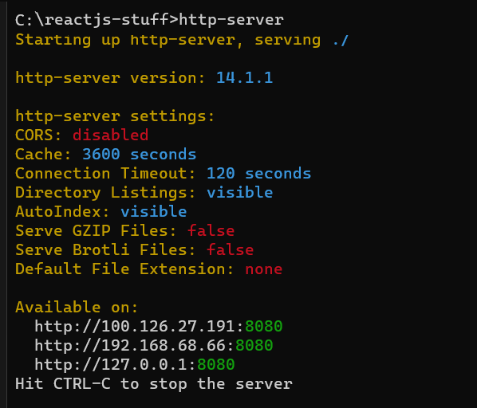
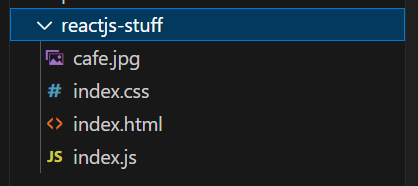
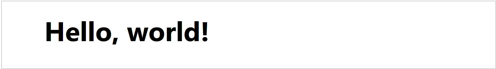
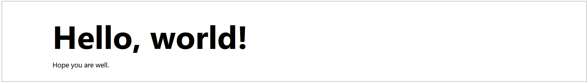
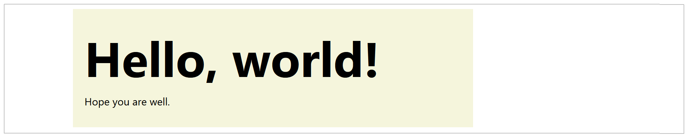
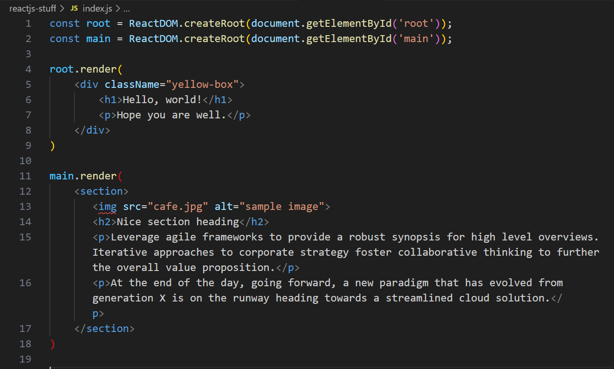

Learning Goals
At the end of this Tutorial, you will be able to:
- Use the React render() method to update the HTML content of a web page on a local server.
React.js: Quick setup
The fastest way to get started with React is to:
- Import the React.js (version 18) libraries and Babel transformer from a CDN.
- View your React-powered web pages with the VSCode Live Server extension.
Installing the local Node.js web server
The NPM repository of packages includes a basic web server named http-server that is a good choice for running React.js apps on your local machine.
To install the http-server package globally so that you can run it from any folder, use the Node Package Manager command line tool. Open a command prompt or terminal and enter the following:
npm install -g http-serverRunning the local web server
To start the http-server from a folder containing static website files, change to that directory. For example:
C:\react-stuffNext, in that directory, enter the following command:
C:\react-stuff\http-serverYour command prompt or terminal should respond as shown below.
You can access the web server on your machine in a browser at this address:
http://localhost:8080Creating the static web files
Follow these steps:
- Open VS Code and, in the Explorer sidebar, create a new folder on your computer to store your React.js exercises files.

- In this new exercise folder, create a new, empty file and save it as index.html.
- Copy the content below into your index.html file, and then save the file.
Note that the link to the yet uncreated index.js JavaScript file has an attribute of type="text/babel".<!DOCTYPE html> <html lang="en"> <head> <title>Sample React.js web page</title> <!-- CSS for this exercise --> <link rel="stylesheet" href="index.css"> <!-- import React.js from CDN --> <script crossorigin src="https://unpkg.com/react@18/umd/react.production.min.js"></script> <script crossorigin src="https://unpkg.com/react-dom@18/umd/react-dom.production.min.js"></script> <!-- import Babel transformer from CDN --> <script crossorigin src="https://unpkg.com/babel-standalone@6/babel.min.js"></script> </head> <body> <div id="root"></div> <!-- JSX for this exercise --> <script src="index.js" type="text/babel"></script> </body> </html> - In the same folder, create a new, empty file and save it as index.js.
- Download the index.css stylesheet file and save it in your exercise folder.
- Download the cafe.jpg image file and save it in your exercise folder.
{kind=link}
In the VS Code Explorer sidebar, you should see four files in your exercise folder as shown below.
Displaying an HTML element
Follow these steps to use React.js to display an HTML element in your web page.
- In your index.html file, you can see a single div tag with an ID of root.
<div id="root"></div>
- In your index.js file, copy and paste the following:
const root = ReactDOM.createRoot(document.getElementById('root')); root.render(<h1>Hello, world!</h1>) - Save both files and run the local http-server for your exercises folder. You should now see the following in your web browser. 
The imported React library gives you access to the ReactDOM global variable. This has a method named render() that means 'display in web page'.
The two lines of code specify:
- Where: The location or 'container' where the element is to be inserted.
- What: The element to be inserted in the web page.
About the root node
In the above simple example, the HTML DOM contains a single div with an ID of root that is updated by React.
<div id="root"></div>
Typically, apps built with React just have just a single root DOM node.
However, you may have as many React-controlled DOM nodes as you like.
<div id="root"></div> <div id="something"></div> <div id="anotherthing"></div>
Rendering multiple elements
Let's try to use React to render two elements on our web page.
- In index.js, update the render() method as follows:
root.render( <h1>Hello, world!</h1> <p>Hope you are well.</p> )
This will not work! The render() method can display only one element – but this can a parent element with multiple child elements. - Rewrite your code by wrapping the two elements inside a single span tag as shown below.
root.render( <div> <h1>Hello, world!</h1> <p>Hope you are well.</p> </div> )
Your new, updated web page with two HTML elememts should now display correctly.
Alternatively, you can use a so-called fragment to wrap multiple lines. This will prevent unnecessarily adding extra nodes to the DOM.
A fragment looks like an empty HTML tag: <> </>.
root.render(
<>
<h1>Hello, world!</h1>
<p>Hope you are well.</p>
</>
)
The fragment tag works only on an installed React app.
Rendering elements with classes
Often the elements you will want to display with render() will contain CSS classes.
However, in JavaScript code class is a reserved keyword used for defining classes. When rendering HTML classes, React uses the term className instead. See the exercise below.
- In index.js, update the React render() method as follows:
root.render( <div className="yellow-box"> <h1>Hello, world!</h1> <p>Hope you are well.</p> </div> )
The CSS-styled output should display correctly in your web page.
Rendering elements and closing tags
React is a lot stricter when dealing with syntax than are web browsers when displaying HTML. See this exercise.
- In index.html, add the following new div container.
<div id="main"></div>
- In index.js, add this React statement that will create a variable named main.
const main = ReactDOM.createRoot(document.getElementById('main')); - Next, add a new render() method with the element to be displayed on the web page.
In this example, the various elements to be rendered are wrapped inside a parent <section> container. Your index.js screen should look as shown below.  But the code does not run!main.render( <section> <img src="cafe.jpg" alt="sample image"> <h2>Nice section heading</h2> <p>Leverage agile frameworks to provide a robust synopsis for high level overviews. Iterative approaches to corporate strategy foster collaborative thinking to further the overall value proposition.</p> <p>At the end of the day, going forward, a new paradigm that has evolved from generation X is on the runway heading towards a streamlined cloud solution.</p> </section> ) - The reason is that the img tag has no closing forward slash />. Update the tag as follows.
 Your code will now run correctly and your web page should look as shown below.
Your code will now run correctly and your web page should look as shown below.